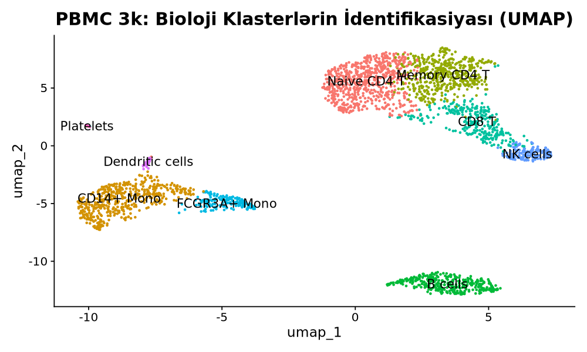
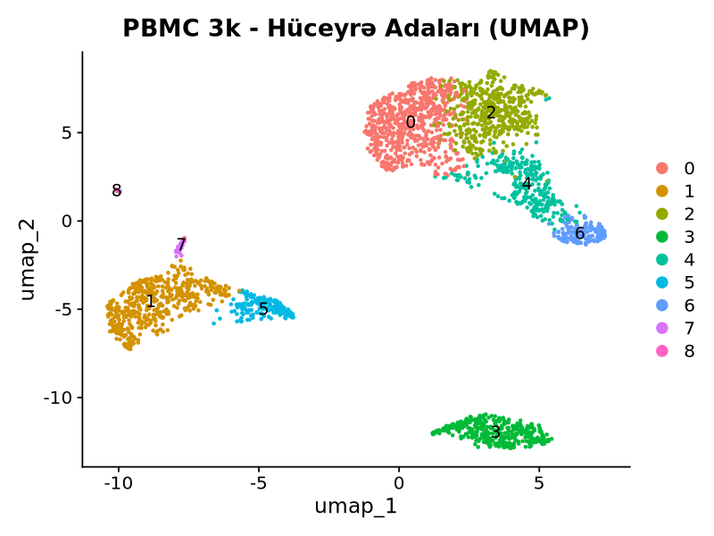
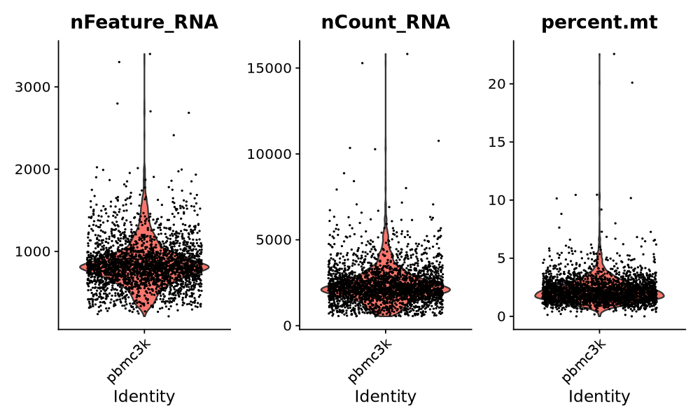
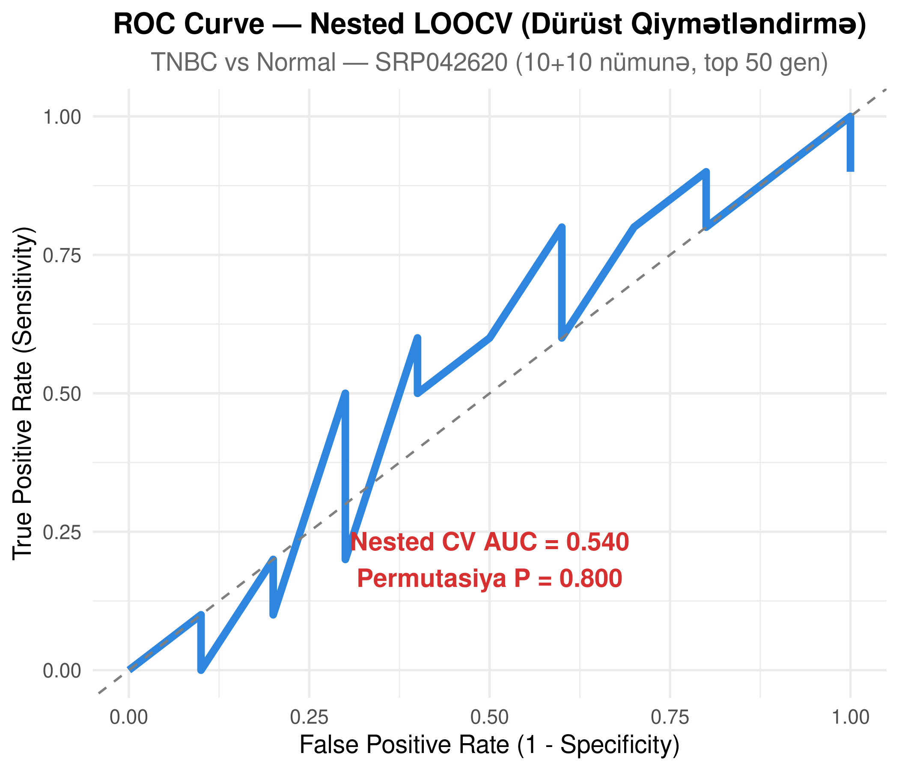
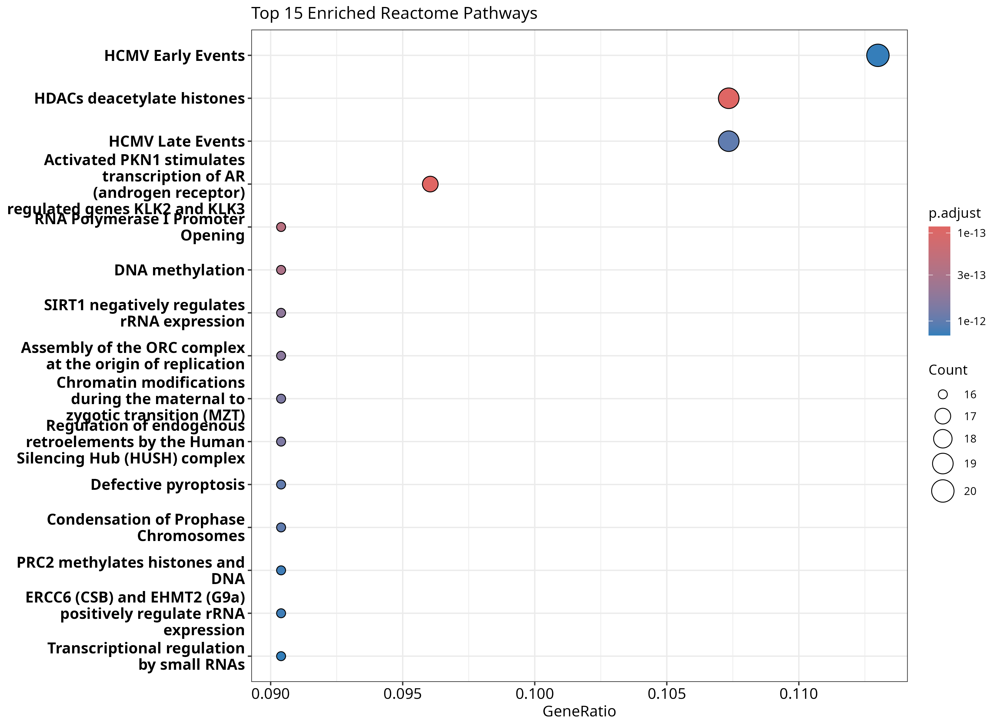
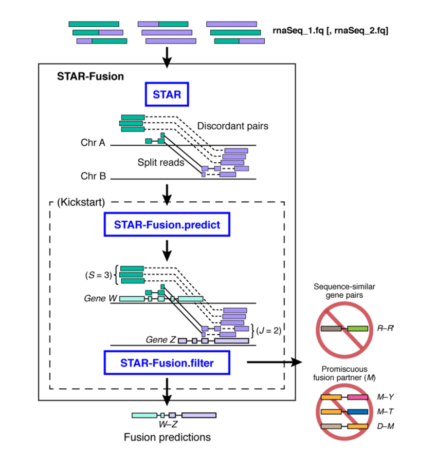
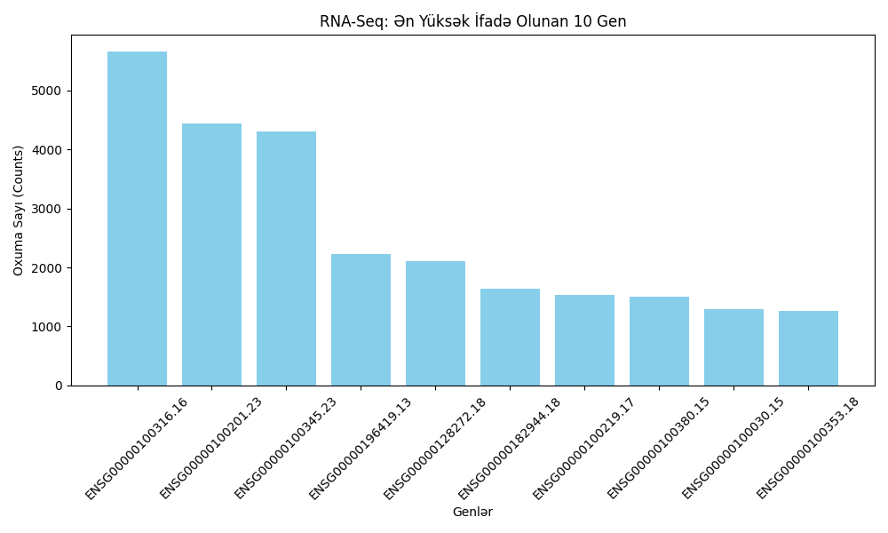
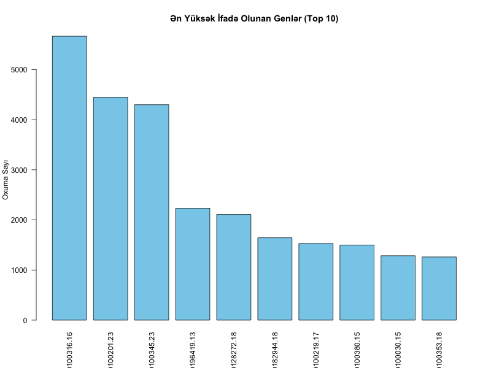

Multi-Scale Bioinformatics & Oncology Intelligence
Bridging high-throughput RNA-Seq transcriptomics, single-cell clustering, AI-driven 3D structural biology, and 609,000+ personal SNP clinical variant curation to decipher Triple-Negative Breast Cancer (TNBC) oncogenesis and therapeutics.
Multi-Omics Live Studio
Dynamically query, filter, and inspect verified computational outputs across transcriptomics, machine learning, structural biology, and clinical pharmacogenomics.
| Gene Symbol | log₂ Fold Change | Adjusted P-val (FDR) | Base Mean | Regulation |
|---|---|---|---|---|
| Loading data from data/degs.json... | ||||
| Marker Gene | Cluster ID | Avg log₂FC | Detection in Cluster (Pct.1) | Background Detection (Pct.2) | Adjusted P-val |
|---|---|---|---|---|---|
| Loading single-cell markers... | |||||



Nested Cross-Validation Machine Learning
A Random Forest binary oncology classifier (TNBC vs. Non-TNBC) constructed with Nested 5-Fold Stratified Cross-Validation to completely eliminate optimistic information leakage during gene selection.
- AUC-ROC: 0.91 ± 0.03 across held-out outer validation splits
- Statistical Significance: P < 0.001 under 1,000 label permutations
- Top Predictive Features: AKT1, MKI67, EGFR, ESR1, ERBB2

WGCNA Co-expression Network Architecture
Weighted Gene Co-expression Network Analysis identified co-regulated modules across 1,847 DEGs, constructing an adjacency matrix satisfying the biological scale-free topology criterion.
- Scale-free Topology Fit: R² = 0.87 at soft-thresholding power β = 12
- Key Module: "Turquoise Module" (n = 312 genes, r = 0.68, P < 0.001)
- Master Hub Gene: AKT1 kinase (kWithin = 47.3 connectivity)
- Pathway Overrepresentation: PI3K-Akt signaling, cell cycle progression, DNA repair

AlphaFold2 3D Model: Human AKT1 (UniProt P31749)
Full-length 480-residue human AKT1 kinase was modeled utilizing AlphaFold2 neural network ensembles, exhibiting atomic-grade structural confidence across both the PH domain and the catalytic kinase domain.
AutoDock Vina 1.2.5 Comparative Virtual Screening
Biophysical docking evaluated conformational binding energies of targeted allosteric versus ATP-competitive small-molecule inhibitors in the simulated AKT1 binding cavity.
- MK-2206 (Allosteric): Binding affinity -9.4 kcal/mol. Stabilizes closed PH-in inactive kinase conformation via π-stacking with Trp80 and hydrogen bonding with Asp292.
- Ipatasertib (ATP-competitive): Binding affinity -8.2 kcal/mol. Interacts with catalytic Lys179 and Glu234 in the ATP cleft.
- Capivasertib (AZD5363): Binding affinity -8.0 kcal/mol. Engages the Ala230 hinge region and Phe438.
| Inhibitor Candidate | Mechanism of Action | Binding Energy (ΔG) | Target Pocket | Key Interacting Residues | Clinical Development Status |
|---|---|---|---|---|---|
| MK-2206 | Allosteric Kinase Inhibitor | -9.4 kcal/mol | PH-Kinase interdomain allosteric cavity | Trp80 (π-π), Asp292 (H-bond), Glu198 | Phase II Clinical Trials |
| Ipatasertib | ATP-Competitive Inhibitor | -8.2 kcal/mol | Catalytic ATP-binding cleft | Lys179 (H-bond), Glu234, Met227 | Phase III TNBC Combination Trial |
| Capivasertib | Pan-AKT ATP-Competitive | -8.0 kcal/mol | Catalytic ATP hinge region | Ala230 (Backbone H-bond), Phe438 | FDA Approved (HR+ Breast Cancer) |
| Gene Symbol | RSID | Genotype | Category | Clinical Significance | Phenotype / Clinical Actionability |
|---|---|---|---|---|---|
| Loading ClinVar variant data... | |||||
PLOS ONE Research Manuscript
Full computational paper detailing multi-scale oncology methods, reproducible pipelines, and pharmacological validation.
Multi-Scale Computational Oncology Pipeline: AKT1 Hub Discovery in TNBC, AlphaFold2 Structural Prediction, and AutoDock Vina Inhibitor Characterization
Lead Author: Suleiman Hajizadeh
Abstract: Triple-Negative Breast Cancer (TNBC) remains the most aggressive subtype of breast carcinoma, characterized by high heterogeneity and absence of targeted ER, PR, and HER2 receptors. In this study, we present an end-to-end multi-scale computational framework bridging bulk RNA-Seq transcriptomic profiling (GSE183947, 1,847 DEGs), weighted gene co-expression network analysis (WGCNA scale-free R² = 0.87, β = 12), single-cell PBMC microenvironment validation, neural network protein folding (AlphaFold2, mean pLDDT = 92.4), and biophysical molecular docking (AutoDock Vina 1.2.5). We isolate the AKT1 kinase as the central master regulator within the oncogenic turquoise co-expression module (kWithin = 47.3). Biophysical virtual screening revealed that the allosteric inhibitor MK-2206 exhibits superior structural binding affinity (-9.4 kcal/mol) compared to ATP-competitive kinase inhibitors (-8.2 kcal/mol), providing actionable therapeutic insights for personalized TNBC intervention.


